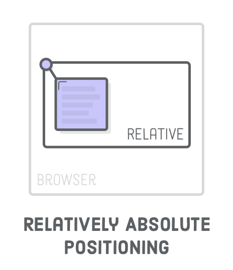

За замовчуванням елементи на сторінці розташовуються зліва направо і зверху вниз. А як зробити напис на зображенні товару, показати один елемент поверх іншого при ховері або змусити меню завжди бути прикріпленим до верхньої частини в'юпорту, навіть під час скролу? Для вирішення подібних завдань існує властивість position, що дозволяє буквально підняти елемент і розмістити його поверх будь-якого іншого.

Статичне позиціонування (static) - це початковий стан всіх елементів веб-сторінки. Блокова модель і флексбокс розташовують елементи саме в цьому статичному потоці сторінки. Відносне (relative), абсолютне (absolute) і фіксоване (fixed) позиціонування дозволяють підняти елемент над потоком сторінки і вручну його позиціонувати, використовуючи систему координат, початок якої залежить від типу позиціонування.
Увага: Переважна більшість елементів повинна бути розміщена відповідно до стандартного статичного потоку сторінки. Інші схеми позиціонування використовуються для декоративних ефектів і у разі, якщо неможливо спозиціонувати по-іншому.
Властивість position
Змінює тип позиціонування елемента. За замовчуванням встановлено значення static. Для зазначення положення елемента використовуються властивості top, left, bottom або right, які застосовуються до елементів без position.
position: static | relative | absolute | fixed | sticky | inherit
Елемент, значення властивості position якого відрізняється від static, називається «позиційований елемент».

Відносне позиціонування
Під час використання відносного позиціонування елемент залишається в потоці сторінки, тобто сусідні елементи не займають його місце. Проте, візуально елемент можна зсунути щодо його оригінального положення, водночас він може перекривати сусідів.

Властивості top, left, bottom і right дозволяють вказати зміщення елемента (візуальне) щодо його вихідного положення. Можуть приймати від'ємні значення.

Корисно: Відносне позиціонування не використовується самостійно, тому що елемент не виривається з потоку сторінки, продовжуючи займати місце. Використовується тільки разом із абсолютним позиціонуванням.
Створимо три блоки. Середньому div.relative встановимо відносне позиціонування і візуально змістимо його вправо і вниз щодо початкового положення.
See the Pen lesson-09-relative-positioning by goit-academy (@goit-academy) on CodePen.
Абсолютне позиціонування
Під час використання абсолютного позиціонування елемент виривається з потоку сторінки, тобто сусідні елементи займають його місце. Відлік значень top, left, bottom і right для абсолютно позиційованого елемента ведеться щодо найближчого предка з позиціонуванням, відмінного від статичного. Якщо такого предка не буде, то відлік буде здійснюватися від меж елемента <body>.

Абсолютне позиціонування не дуже корисне самостійно, і використовується, наприклад, разом із відносним для декоративного позиціонування елементів. Тобто елемент «абсолютно» позиціонується «щодо» якогось свого предка, який знаходиться в потоці сторінки.
Тоді значення top, left, right і bottom для абсолютно позиціонованого елемента відраховуються від меж цього предка, а не від <body>. Тобто встановлення position: relative предку використовується з єдиною метою - змусити абсолютно позиційований елемент розташовуватися щодо цього предка.
Корисно: Запис bottom: 20px означає відстань між нижньою межею щодо позиціонованого предка і нижньою межею абсолютно позиціонованого елемента. Аналогічно працюють right, left і top - задається відстань між однойменними сторонами предка і елемента.
Створимо три блоки із зображенням і текстом в кожному. Задамо div.thumb відносне позиціонування, а p.label - абсолютне, щоб можна було поставити текст поверх зображення в цьому блоці. Не забуваємо прибрати у p.label зовнішній відступ (margin), оскільки він впливає на зміщення самого елемента, але не на інші елементи в потоці.
See the Pen lesson-09-absolute-positioning by goit-academy (@goit-academy) on CodePen.
Увага Якщо не поставити div.thumb відносне позиціонування, то всі три p.label опиняться у верхньому правому куті вікна, оскільки значення top і right будуть відраховуватися щодо елемента <body>.
Фіксоване позиціонування
У разі фіксованого позиціонування, елемент вилучається з потоку сторінки і позиціонується щодо в'юпорту (вікна браузера). Це створює ефект фіксації елемента в певному місці екрану при прокручуванні сторінки.

Фіксоване позиціонування використовується для закріплених хедерів з навігацією, спливаючих вікон, чатів з менеджером на сторінках інтернет-магазинів тощо.

Створимо кнопку чату з менеджером button.chat-button і помістимо її в нижній правий кут в'юпорту. Під час прокручування сторінки кнопка залишається на місці, тому що у неї фіксоване позиціонування.
See the Pen lesson-09-fixed-positioning by goit-academy (@goit-academy) on CodePen.
Липке позиціонування
Липке позиціонування (sticky) - це ніби комбінація властивостей relative і fixed. Для початку подивіться на ілюстрацію, на якій липке позиціонування задається елементам з літерами A і B, таким чином відразу буде зрозуміло.
- Доки елемент знаходиться у своєму контейнері і контейнер не покидає область видимості під час вертикальної прокрутки - елемент поводить себе ніби позиціонується щодо (relative).
- Щойно частина батьківського контейнера залишає зону видимості, елемент фіксується на сторінці доти, доки хоча б якусь частину контейнера видно на екрані.
- Якщо весь контейнер покине зону видимості, то знову увімкнеться поведінка як під час відносного позиціонування - елемент зникне з екрану одразу після контейнера.
Для реалізації липкого позиціонування необхідні всього три умови:
- У липкого елемента повинно бути встановлено позиціонування position: sticky.
- У липкого елемента повинно бути встановлено положення, наприклад top: 0.
- Елемент-контейнер повинен бути більшим по висоті за липкий елемент.
Заголовки секцій в прикладі зроблені липкими, тому, під час прокручування сторінки вони будуть «прилипати» до верху області перегляду доти, доки видима будь-яка частина їх секції.
See the Pen lesson-09-sticky-positioning by goit-academy (@goit-academy) on CodePen.